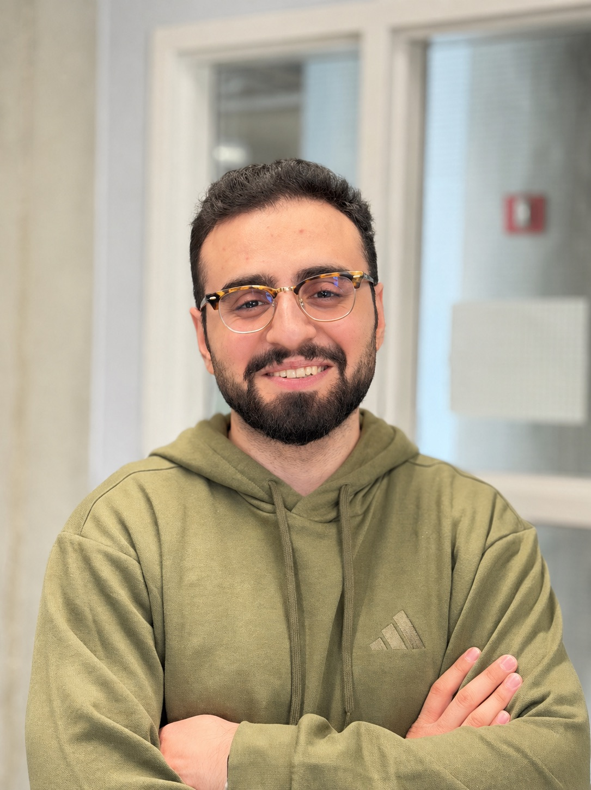

Graduate Research Intern, Imaging Physics
June – August 2026The University of Texas MD Anderson Cancer Center
I worked on healthcare operations research in the Department of Imaging Physics.
I’m a Ph.D. student in Industrial and Systems Engineering at the University of Minnesota Twin Cities. I study decision-making under uncertainty, with interests in queueing, information design, and healthcare operations.

I worked on healthcare operations research in the Department of Imaging Physics.
I use stochastic models to study how access to information shapes people’s decisions and how those decisions affect the performance of service systems.
I developed algorithms to infer which sources influence one another in networks used for fact-checking.
During my summer internship at MD Anderson Cancer Center, I studied operations research applications in healthcare.
Customers use the last reported queue length to decide whether to join. I formulated a dynamic program to choose when to update that report, solved the two-state case, and compared four policies across 150 scenarios in Python. With cost-free monitoring, timed updates yielded up to 34.9% higher modeled throughput than continuously disclosing the queue length.
Sources can agree because they influence one another. I developed three algorithms to reconstruct those relationships for distributed fact-checking.
Methods Discrete-event simulation, stochastic optimization, dynamic programming, Markov chains.
Tools Python (NumPy, SciPy, pandas, scikit-learn, PyTorch), CVXPY, Simio, MATLAB, C/C++.